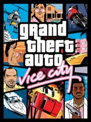

 |
|
| Tiempo de juego | 2m 50s |
| Última actividad | 16/1/2026 12:03:10 |
| Añadido | 10/11/2025 17:56:12 |
| Modificado | 10/12/2025 11:27:02 |
| Estado de finalización | Jugado |
| Librería | Playnite |
| Fuente | |
| Plataforma | PC (Windows) |
| Fecha de lanzamiento | 29/1/2013 |
| Puntuación de la Comunidad | |
| Puntuación de la Crítica | |
| Puntuación de usuario | |
| Género | Adventure Racing |
| Desarrollador | Rockstar Games |
| Editor | Rockstar Games |
| Característica | Single Player |
| Enlaces | |
| Tag | |
Ponete la camisa hawaiana y subite a la Infernus. Bienvenido a 1986. Vice City no es solo un juego, es LA fantasía pop de los 80 definitiva.
Sos Tommy Vercetti, un mafioso recién llegado a esta ciudad que es, básicamente, Miami. Obvio, todo te sale para el orto apenas pisás la ciudad, te roban la guita y ahora tenés que recuperarla y, de paso, quedarte con todo. La historia es puro Scarface en una escalada de poder brutal.
Pero la historia es casi una excusa. El verdadero protagonista es la ciudad y, sobre todo, la MÚSICA. Este juego tiene, sin discusión, una de las mejores bandas sonoras de la historia. Manejar por Ocean Drive, de noche, mientras llueve y suena "Broken Wings" en Emotion 98.3, o "Video Killed the Radio Star" en Flash FM... eso, amigo, no tiene precio.
Un clásico atemporal. Si no lo jugaste, te perdiste una parte clave de la historia gamer. Si ya lo jugaste, sabés que siempre es buen momento para volver a esas calles de neón.